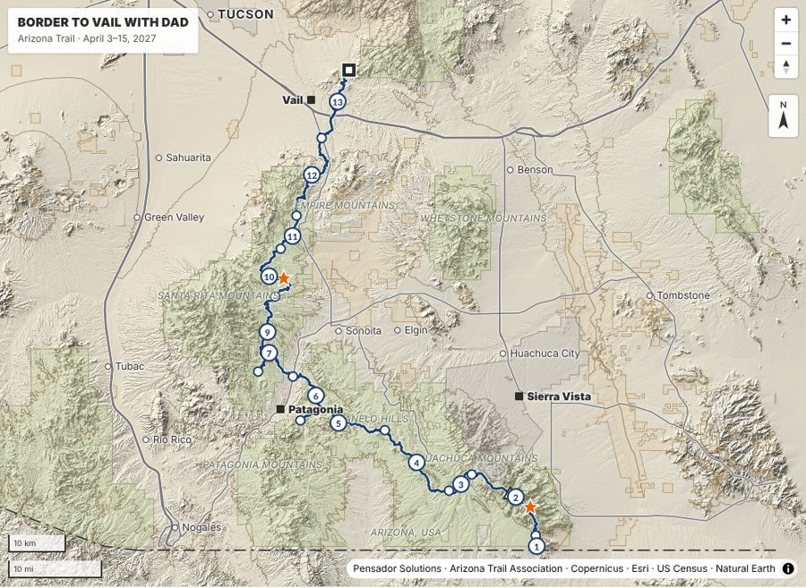
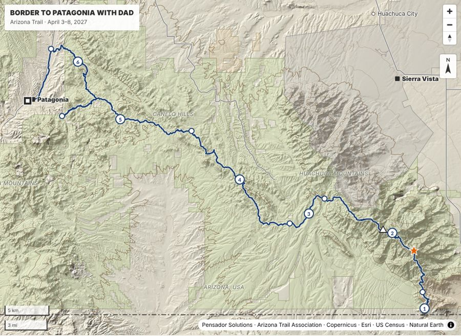
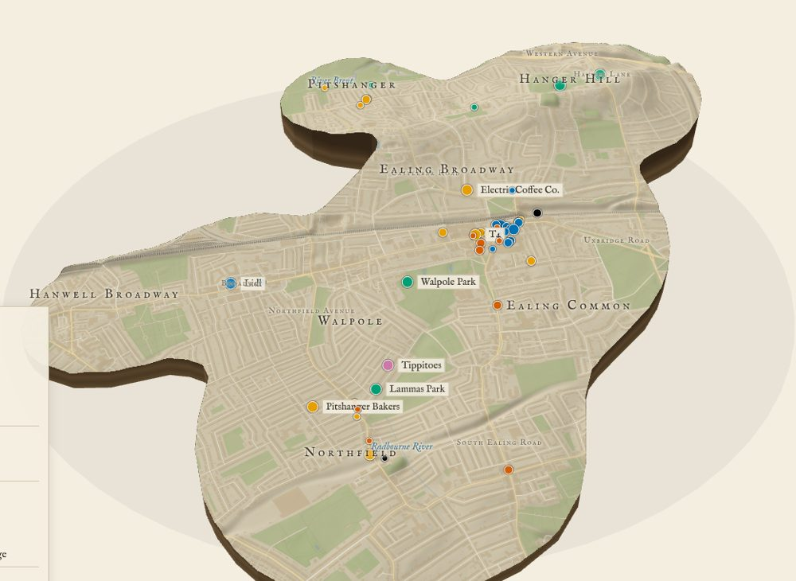
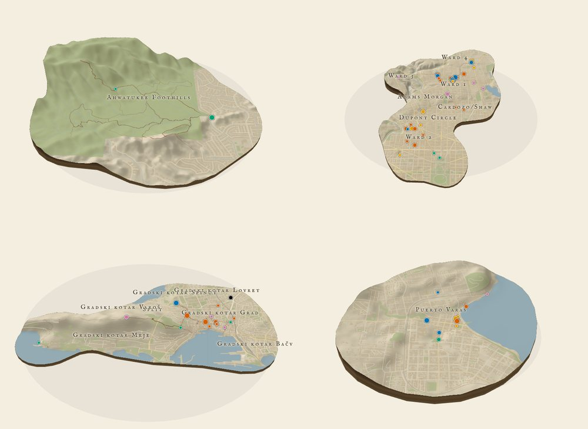
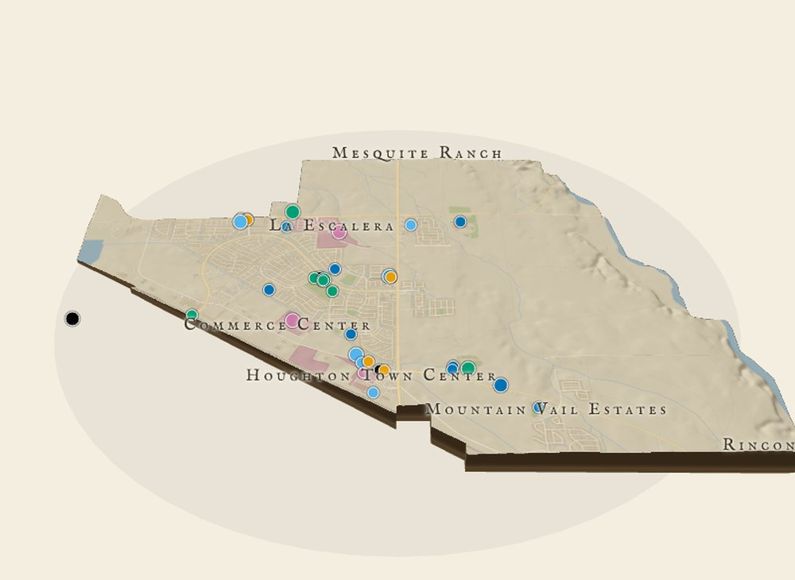
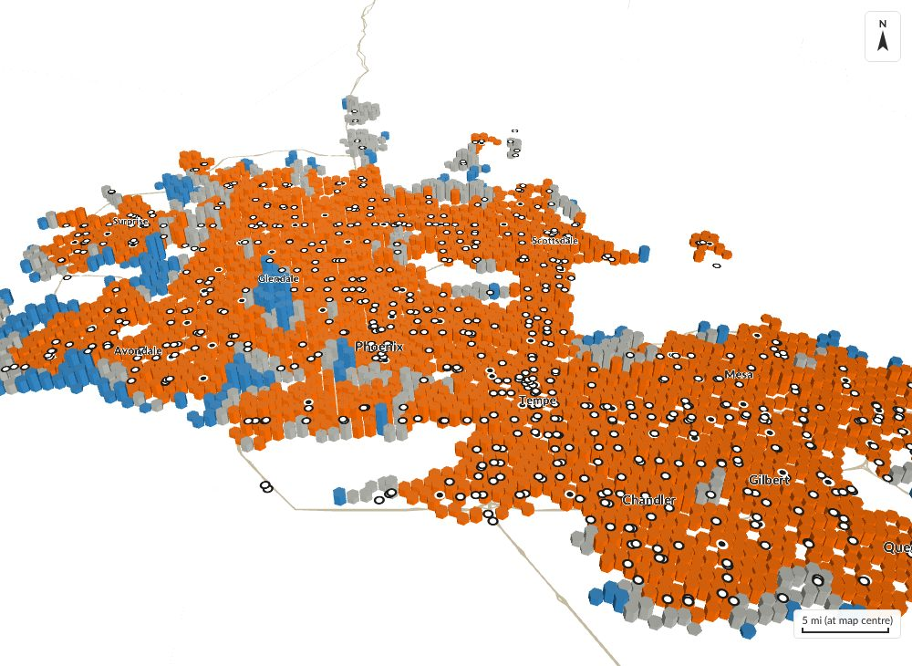
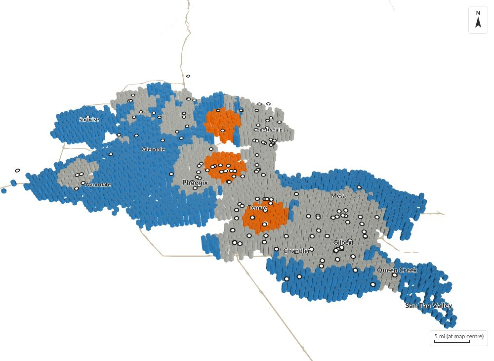
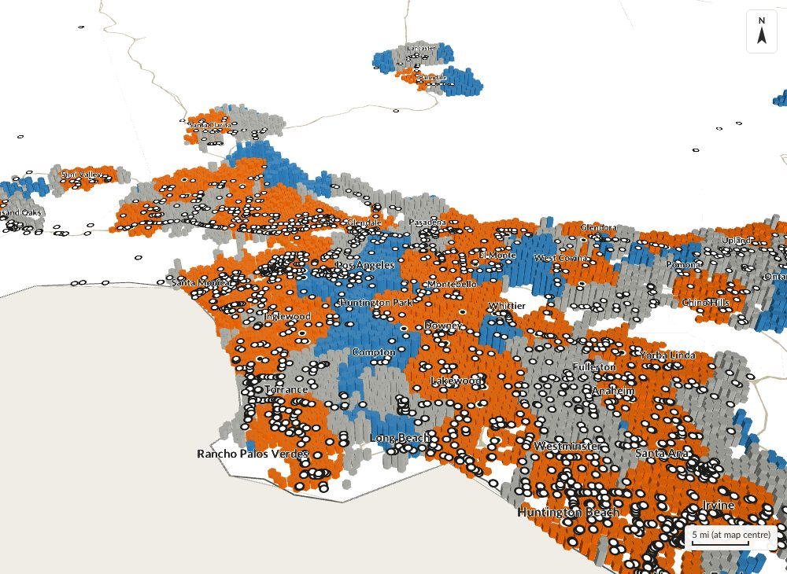
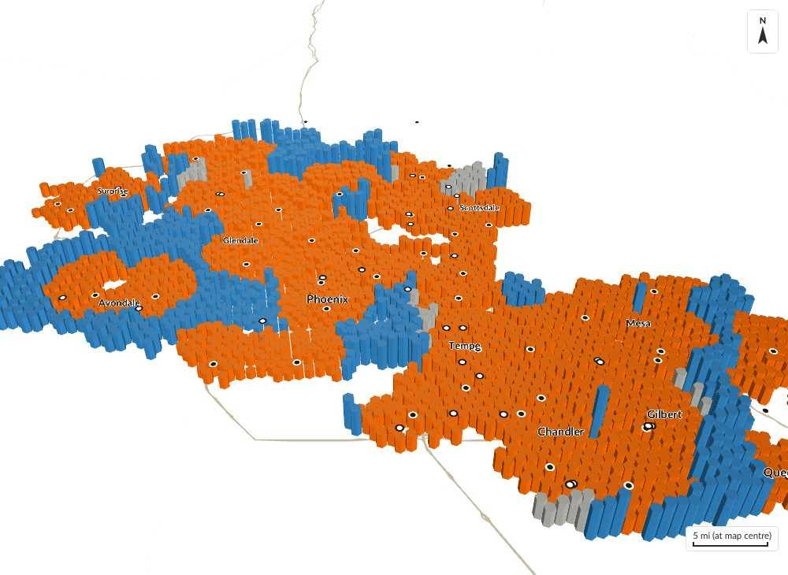

Web GIS portfolio
One real question per platform, each built on the tool whose strengths fit it best: open-source vector maps, spatial SQL in the cloud, enterprise dashboards, collaborative maps, custom cartography and big-data analytics.
Every map carries a title, legend, scale, north reference, sources and date, and uses color schemes that stay readable with red-green color blindness.
Live

Arizona Trail: Border to Vail
123.5 miles from border monument 102 over the Huachuca crest to Colossal Cave, told as 13 day hikes with relief, contours and an elevation profile.
Why MapLibre: a fully open, self-hosted story map with no vendor lock-in or usage fees.

Arizona Trail: Border to Patagonia
The first 52.7 miles of the trail in 6 walking days, ending on an old railroad grade into a small Arizona town.
Why MapLibre: the same open template reused for a second route, with data bundled into the page.

Our Ealing
The part of west London we lived in, cut out as a 3D block by the same kernel-density home-range method used for collared wildlife, with a card for each park, bakery and shop we went back to.
Why three.js: a hand-built 3D scene, terrain and all, with no map platform or fees.

Home-range atlas
49 places we lived in or kept going back to, from Phoenix to Puerto Varas, each ranked by days of data and cut out as a 3D block by one automated script.
Why a pipeline: ten years of check-ins and GPS tracks go in, and a finished, privacy-checked map comes out for every place.

Rita Ranch
A neighborhood guide for southeast Tucson built only from public data: parks, schools, groceries and the subdivisions platted since 2023.
Why three.js: the same 3D template works for a community or developer who wants a map of their own place.

Coffee white space across the Southwest
Where is there still room for a drive-thru coffee? Every Overture place, road and building in four states, plus Census population, scored into 17,640 H3 hexagons and drawn in 3D. The Pima County study is the zoomed-in version.
Why Wherobots and deck.gl: Apache Sedona joins tens of millions of geometries in the cloud with spatial SQL, and deck.gl draws the result on the GPU with no tile server.

Where should the next recovery studio go?
Metro Phoenix scored for a sauna, cold-plunge and red-light studio: educated, higher-income adults within a 10-minute drive, against 1,300 recovery businesses. An independent study, not affiliated with Optimyze.
Why Wherobots and deck.gl: the coffee pipeline reused as a brand recipe, so a new study is a new config, not a new project.

Room for another walk-in chiropractic clinic?
Four states scored for a membership chiropractic concept: working-age adults and strip-center retail, against 12,000 chiropractors. An independent study, not affiliated with The Joint.
Why Wherobots and deck.gl: Census income, age and education joined to every place and road at H3 scale, with no desktop GIS.

Where could the next Sprouts go?
Four states scored for a natural grocer: households earning $100K+, education and population within 3 miles, against Whole Foods, Trader Joe's and Natural Grocers. An independent study, not affiliated with Sprouts.
Why Wherobots and deck.gl: two open store datasets merged and de-duplicated in SQL, then 15,000 trade areas drawn at once.
In progress
Where should the next drive-thru coffee go?
A hypothetical coffee brand wants a Pima County site with heavy commuter traffic and no Dutch Bros within 2 miles. Move the sliders to re-weight the model and watch the ranking change.
Why CARTO: spatial SQL in a cloud warehouse, H3 indexing and a no-code dashboard a client can explore.
Change Watch
Weekly Sentinel-2 change detection for southern Arizona, with a before/after swipe and charts of what changed where.
Why ArcGIS: Experience Builder and Dashboards are what most public agencies and nonprofits run on.
Beaver survey planning map
River reaches, modeled dam capacity and access points, shared with survey partners who can comment right on the map.
Why Felt: the fastest way to put a map in front of people who don't use GIS and get their notes back.
A historic route, retold
A scrolling story of a historic march, built from archival accounts, on a custom antique-style basemap with 3D terrain.
Why Mapbox: Studio styling and 3D terrain for cartography that looks nothing like a default web map.
Drive the shortlist
A client-facing tour of the top coffee sites, with Street View, drive times and nearby competitors for each.
Why Google: Places, Routes and Street View give clients the on-the-ground look they expect.
80-acre land map
Parcel, contours, slope and access for a hypothetical rural property, exported from QGIS as a lightweight web map.
Why qgis2web and Leaflet: the simplest hand-off for a small client who wants a link, not a platform.